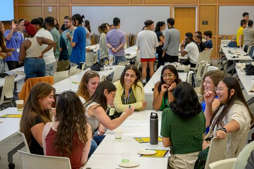

What is Networking?
Networking is all about making connections with new people! Building your network means meeting lots of different kinds of people, both within your industry of interest and outside it because you never know where that next job might come from. You already have a network of your family and friends, and being a UMSI student gives you access to student/alumni networks as well!
Ways to Network
- Attend Events: The University, UMSI, and many other organizations host networking events and career fairs that can help you build connections with other students and professionals. A connection can also come from chatting with a speaker after a talk or going to office hours with your professors!
- Connect With Your Current Network: The people you know already may have connections that can help you! Tell people about your work and your interests, and see if they know anyone like you. Chances are, they do!
- Message Interesting People: Sending a LinkedIn message to a stranger can sound daunting, but initiative and genuine interest goes a long way, especially to a UMich alum! In general, people want to help you if they can, so be bold.